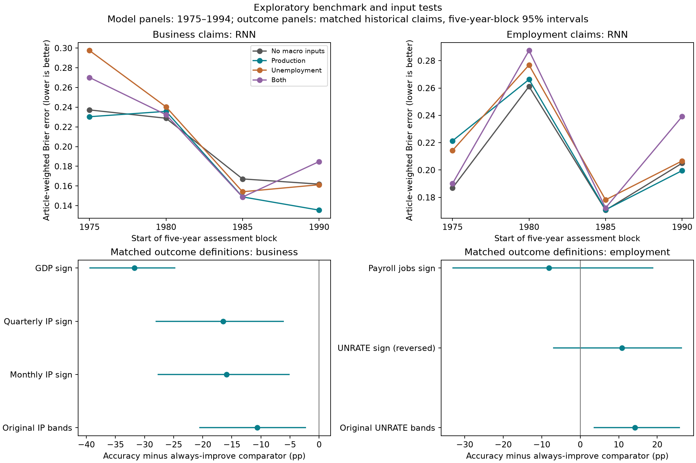

Both requested tracks are complete. No original scoring definitions, RNN bundles or p-values were replaced. Source validation and modern evaluation remain deferred.
Inputs: Production features reduce the matched RNN's mean Brier error from 0.1992 to 0.1910, but improve only two of four eras overall. The gain concentrates in business claims: 0.1988 to 0.1876, improving three eras. Employment RNN error increases with production inputs and worsens in all four eras with unemployment inputs. The metadata-only logistic control still has the best mean loss among the tested pooled configurations (0.1743). This is an exploratory input comparison on a different sample and training-label protocol from earlier whole-corpus results, not independent confirmation.
Outcomes: Payroll and unemployment directions disagree for 21.9% of article-weighted matched employment claims. With sign-only payroll scoring, accuracy is 55.1% versus 63.3% for jobs always rising; the paired gap interval includes zero. Matched business accuracy under GDP direction is 54.9% versus 86.6% for always rising. GDP changes the target and frequency; it does not validate the claims' meaning. Raw-export sensitivities have the same gap signs.

All four input groups use identical claims, the same 8-unit GRU and three seeds, and matched logistic models. Training and stopping outcomes come from snapshots available before their cutoffs. Macro trends, observation ages and direction interactions use snapshots strictly before publication-month start. Revised truths are assessment-only. All 16 fold/arm bundles reload and reproduce predictions without outcome columns.
Outcome experiments keep original snapshots, retrieve alternative/reference snapshots together, avoid GDP interpolation and compare identical rows. Business GDP comparisons restrict publication months to quarter ends and horizons to whole quarters; neither condition establishes exact source timing. Five-year intervals are marginal and omit source interpretation and selection uncertainty.
| topic | model | arm | mean_brier | mean_improvement | folds_improved | worst_fold_brier |
|---|---|---|---|---|---|---|
| all | gru | both | 0.209615 | -0.010416 | 1 | 0.252196 |
| all | gru | none | 0.199200 | 0.000000 | 0 | 0.234225 |
| all | gru | production | 0.191022 | 0.008178 | 2 | 0.241229 |
| all | gru | unemployment | 0.212858 | -0.013658 | 2 | 0.280097 |
| all | logistic_metadata | both | 0.204866 | -0.030544 | 1 | 0.298770 |
| all | logistic_metadata | none | 0.174322 | 0.000000 | 0 | 0.248490 |
| all | logistic_metadata | production | 0.186374 | -0.012052 | 2 | 0.259434 |
| all | logistic_metadata | unemployment | 0.224141 | -0.049819 | 2 | 0.296173 |
| all | logistic_metadata_history | both | 0.293636 | 0.005011 | 2 | 0.382416 |
| all | logistic_metadata_history | none | 0.298648 | 0.000000 | 0 | 0.406385 |
| all | logistic_metadata_history | production | 0.265318 | 0.033330 | 3 | 0.328031 |
| all | logistic_metadata_history | unemployment | 0.312000 | -0.013353 | 2 | 0.405511 |
| all | prevalence | both | 0.245368 | 0.000000 | 0 | 0.273652 |
| all | prevalence | none | 0.245368 | 0.000000 | 0 | 0.273652 |
| all | prevalence | production | 0.245368 | 0.000000 | 0 | 0.273652 |
| all | prevalence | unemployment | 0.245368 | 0.000000 | 0 | 0.273652 |
| employment | gru | both | 0.222233 | -0.016316 | 0 | 0.287422 |
| employment | gru | none | 0.205917 | 0.000000 | 0 | 0.261137 |
| employment | gru | production | 0.214526 | -0.008609 | 1 | 0.266240 |
| employment | gru | unemployment | 0.218991 | -0.013073 | 0 | 0.276806 |
| employment | logistic_metadata | both | 0.290622 | -0.057885 | 0 | 0.368913 |
| employment | logistic_metadata | none | 0.232737 | 0.000000 | 0 | 0.294122 |
| employment | logistic_metadata | production | 0.237865 | -0.005128 | 2 | 0.301319 |
| employment | logistic_metadata | unemployment | 0.324925 | -0.092188 | 0 | 0.524353 |
| employment | logistic_metadata_history | both | 0.380611 | -0.000245 | 2 | 0.561076 |
| employment | logistic_metadata_history | none | 0.380366 | 0.000000 | 0 | 0.614909 |
| employment | logistic_metadata_history | production | 0.351226 | 0.029140 | 3 | 0.511920 |
| employment | logistic_metadata_history | unemployment | 0.397806 | -0.017440 | 1 | 0.626558 |
| employment | prevalence | both | 0.225220 | 0.000000 | 0 | 0.248015 |
| employment | prevalence | none | 0.225220 | 0.000000 | 0 | 0.248015 |
| employment | prevalence | production | 0.225220 | 0.000000 | 0 | 0.248015 |
| employment | prevalence | unemployment | 0.225220 | 0.000000 | 0 | 0.248015 |
| general_business | gru | both | 0.209027 | -0.010256 | 1 | 0.270166 |
| general_business | gru | none | 0.198771 | 0.000000 | 0 | 0.237234 |
| general_business | gru | production | 0.187624 | 0.011148 | 3 | 0.235769 |
| general_business | gru | unemployment | 0.213322 | -0.014551 | 2 | 0.297517 |
| general_business | logistic_metadata | both | 0.186751 | -0.024955 | 1 | 0.286639 |
| general_business | logistic_metadata | none | 0.161796 | 0.000000 | 0 | 0.237724 |
| general_business | logistic_metadata | production | 0.176201 | -0.014405 | 2 | 0.249083 |
| general_business | logistic_metadata | unemployment | 0.203140 | -0.041344 | 2 | 0.283501 |
| general_business | logistic_metadata_history | both | 0.273623 | 0.006457 | 2 | 0.373705 |
| general_business | logistic_metadata_history | none | 0.280080 | 0.000000 | 0 | 0.354322 |
| general_business | logistic_metadata_history | production | 0.245519 | 0.034561 | 3 | 0.322194 |
| general_business | logistic_metadata_history | unemployment | 0.293129 | -0.013049 | 2 | 0.359137 |
| general_business | prevalence | both | 0.251056 | 0.000000 | 0 | 0.295911 |
| general_business | prevalence | none | 0.251056 | 0.000000 | 0 | 0.295911 |
| general_business | prevalence | production | 0.251056 | 0.000000 | 0 | 0.295911 |
| general_business | prevalence | unemployment | 0.251056 | 0.000000 | 0 | 0.295911 |
| origin | stage | n_claims | claim_weighted_correctness_revision_rate |
|---|---|---|---|
| 1975-01 | stopping | 2144 | 0.078358 |
| 1975-01 | train | 1110 | 0.104505 |
| 1980-01 | stopping | 5847 | 0.031298 |
| 1980-01 | train | 3831 | 0.058992 |
| 1985-01 | stopping | 14984 | 0.049920 |
| 1985-01 | train | 11454 | 0.034922 |
| 1990-01 | stopping | 7590 | 0.071278 |
| 1990-01 | train | 30796 | 0.042993 |
The sensible candidate for further validation is production information for business claims. Unemployment features and an omnibus input combination do not warrant promotion here. Historical feature availability sharply limits early training: the first fold has 1,110 eligible claims. A future extension can test monthly unemployment/payroll vintages and topic-specific models, with its own fixed comparison and unexposed evaluation; these results alone do not justify further selection on the same eras.